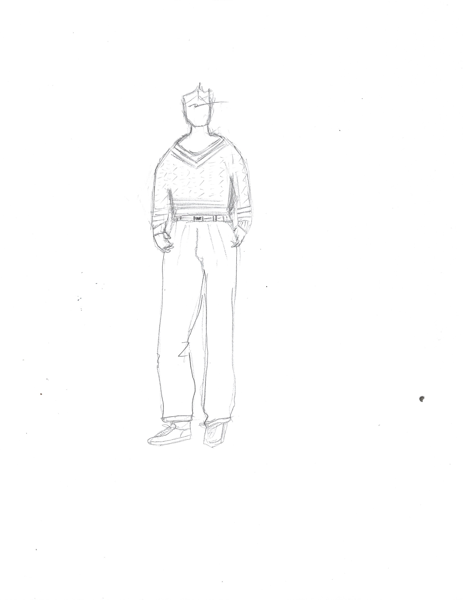

JAR TENNIS PULLOVER SWEATER"
BID: 100$
DATE:DECEMBER 1, 2018
EMAIL TO BID. (HOME PAGE)
THE PROCESS
Tennis Pullover
V-neck, cable-knit sweater in washed white-colored wool
with navy-and-maroon stripes around cuffs, waist, and neckline.
Smashing with cream flannel trousers, it is also one
sweater that looks well with shorts.
For men and women.
